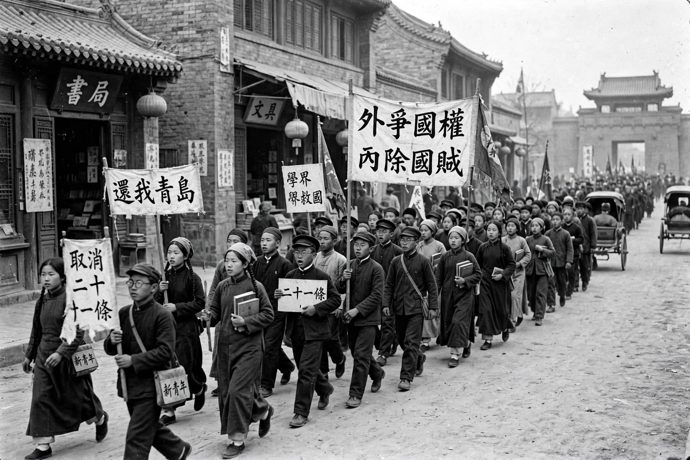

| Date | 4 May 1919 (protests); movement spanning roughly 1917–1921 |
|---|---|
| Location | Beijing and across China |
| Cause | Treaty of Versailles awarding Shandong concessions to Japan |
| Participants | Students, intellectuals, merchants, workers |
The May Fourth Movement was a Chinese cultural and anti-imperialist political movement which grew out of student protests in Beijing on 4 May 1919. Students protested the response of the Chinese government to the Treaty of Versailles, which had allowed Japan to keep territories in Shandong — formerly surrendered by Germany — after the Siege of Tsingtao (1914). The demonstrations sparked national protests and marked an upsurge of Chinese nationalism, a shift towards political mobilization, and a turn away from traditional values towards Western ideas of science and democracy.

After the Xinhai Revolution of 1911 and the establishment of the Republic of China, many intellectuals grew disillusioned with both traditional Confucian culture and the weak republican government. The New Culture Movement, centred on journals such as New Youth (Xin Qingnian), edited by Chen Duxiu, advocated of "Mr. Democracy" and "Mr. Science", called for sweeping cultural reform, including the use of vernacular Chinese (baihua) in place of literary Chinese, promoted by figures such as Hu Shih, and the literary reforms of Lu Xun.
On the afternoon of 4 May 1919, some 3,000 students from thirteen Beijing colleges and universities marched to Tiananmen and then to the Legation Quarter, protesting the Paris Peace Conference's decision to transfer Germany's rights in Shandong to Japan rather than return them to China. Protesters later stormed the residence of Cao Rulin, Minister of Communications, and assaulted the Chinese minister to Japan, Zhang Zongxiang. Mass arrests followed, but nationwide boycotts of Japanese goods, strikes by merchants and workers in Shanghai, and public outrage forced the government to dismiss the targeted officials and to release the students. China's delegates in Paris ultimately refused to sign the Treaty of Versailles.
The May Fourth Movement accelerated the spread of Marxism in China and contributed to the founding of the Chinese Communist Party in 1921. It remains a powerful symbol of patriotism and intellectual awakening in modern Chinese history; 4 May is commemorated as Youth Day in the People's Republic of China. Scholars continue to debate the movement's complex attitudes toward tradition, enlightenment, and national salvation.